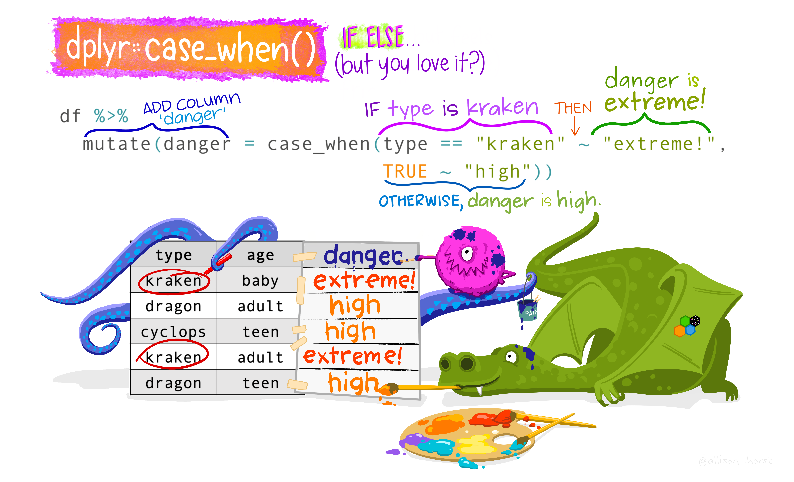
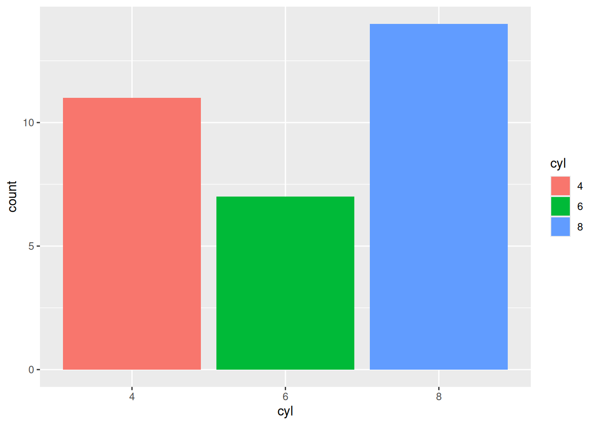
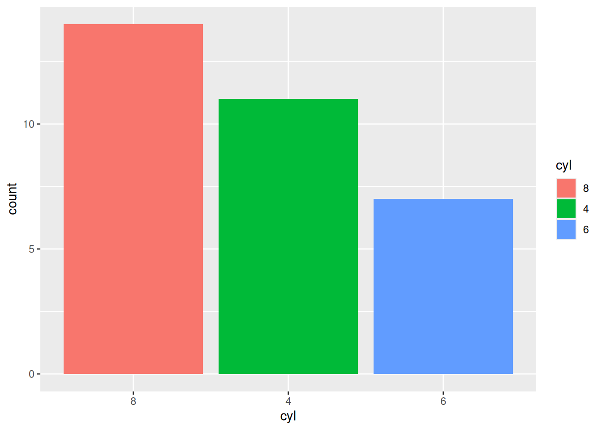
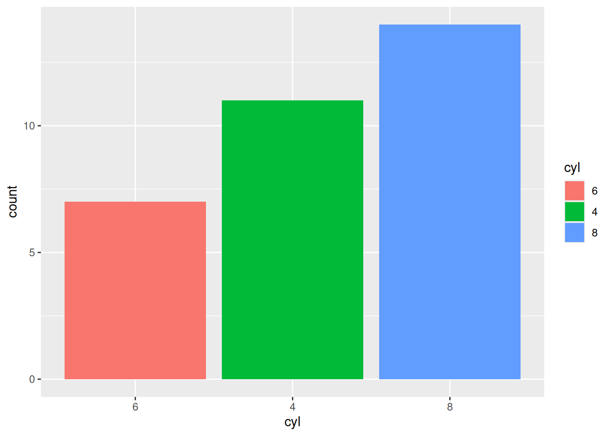
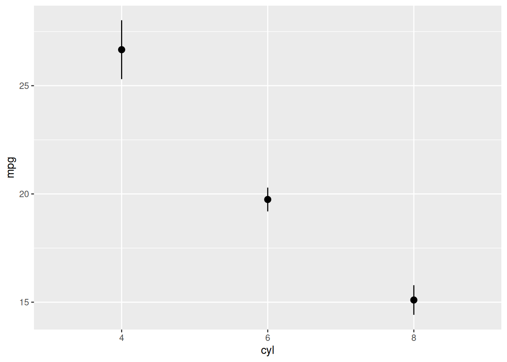
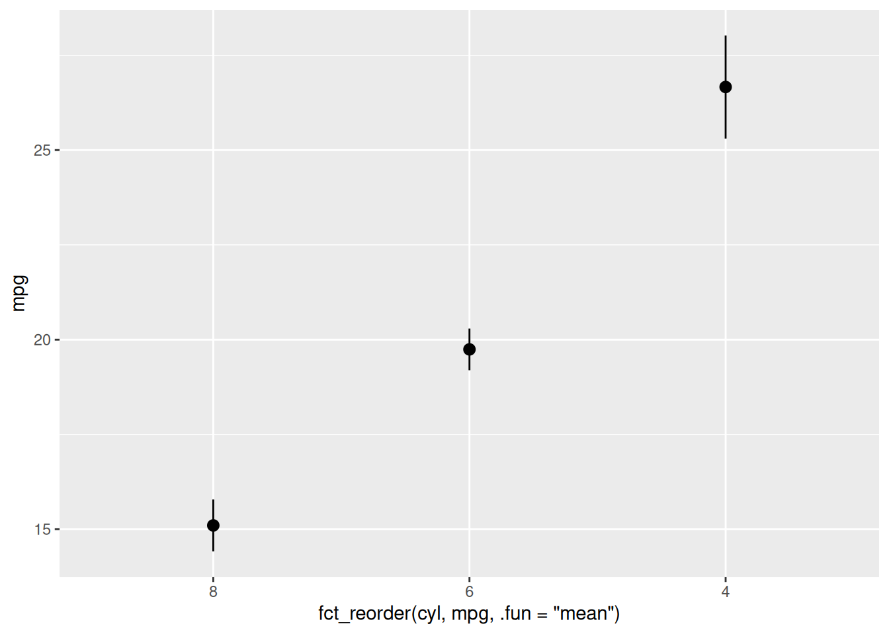

16 Advanced Variable Changing
16.1 Advanced Mutating
16.1.1 Mutating across()
mutate() was previously used to make changes to the data in our columns. To do so, you had to specify the specific column you wanted to change and what you wanted to do to it. However, utilizing the across() function, you can instead apply some changes to multiple columns simultaneously!
across(selection_of_columns, NAME of function to apply to each)
For example, if you wanted to scale() specific columns:
dat %>%
mutate(across(c("Q2", "Q3"), scale)) %>%
select(c("Q2", "Q3")) %>%
head(10)
#> Q2 Q3
#> 1 -0.3443861 -0.3158289
#> 2 -0.3443861 -0.3158289
#> 3 -0.3443861 -0.3158289
#> 4 -0.3443861 -0.3158289
#> 5 -0.3443861 -0.3158289
#> 6 -0.3443861 -0.3158289
#> 7 2.9017304 5.3304180
#> 8 2.9017304 3.4483357
#> 9 2.9017304 5.3304180
#> 10 -0.3443861 -0.3158289Just like in the if_*() calls, because the first argument of across() expects a selection of columns, you can use helper functions to make these selections as well!
dat %>%
mutate(across(starts_with("Q"), scale)) %>%
select(starts_with("Q")) %>%
select(1:7) %>%
# Take just the first 7 columns
# to save space
head(10)
#> Q1A Q1B Q2 Q3 Q4
#> 1 1.3247918 -0.471342 -0.3443861 -0.3158289 -0.2700594
#> 2 NA -0.471342 -0.3443861 -0.3158289 -0.2700594
#> 3 NA -0.471342 -0.3443861 -0.3158289 -0.2700594
#> 4 NA -0.471342 -0.3443861 -0.3158289 -0.2700594
#> 5 1.3247918 -0.471342 -0.3443861 -0.3158289 -0.2700594
#> 6 NA -0.471342 -0.3443861 -0.3158289 -0.2700594
#> 7 1.3247918 2.120156 2.9017304 5.3304180 1.4294526
#> 8 NA 2.120156 2.9017304 3.4483357 4.8284766
#> 9 NA 2.120156 2.9017304 5.3304180 -0.2700594
#> 10 -0.7532261 -0.471342 -0.3443861 -0.3158289 -0.2700594
#> Q5 Q6
#> 1 1.3360441 -0.2731168
#> 2 -0.6042744 -0.2731168
#> 3 -0.6042744 -0.2731168
#> 4 -0.6042744 -0.2731168
#> 5 2.3062033 -0.2731168
#> 6 -0.6042744 -0.2731168
#> 7 -0.6042744 4.9244139
#> 8 0.3658848 -0.2731168
#> 9 -0.6042744 4.9244139
#> 10 -0.6042744 -0.2731168
Note: All of the select() calls were added only to save space and make these notes easier for you to understand by highlighting the specific rows that are changed. Without the select() calls, this code will output all of the data (which is what you want!). select() calls are NOT something that should always be used in your code with mutate(across()).
You can combine where() with across() to mutate conditionally. In other words, IF the column passes some test, the function will be applied to all its values.
Consider the following scenario: say you wanted to convert all the factors to characters.
First, you would check which columns contain factors:
dat %>%
select(where(is.factor)) %>%
glimpse()
#> Rows: 1,472
#> Columns: 6
#> $ A14G_T <fct> "", "", "", "", "", "JAIL", "", "JAIL", "",…
#> $ A17I_T <fct> , , , , , , , , FOOD STAMPS, , , , , , , , …
#> $ C3F_T <fct> "", "", "", "", "", "", "", "", "", "", "",…
#> $ U2Q_T <fct> "", "", "", "", "", "", "", "", "NO NEED TO…
#> $ U2R <fct> , A, A, A, , H, , H, Q, , A, H, P, , H, D, …
#> $ U7A_T <fct> "", "", "", "", "", "", "", "", "", "", "",…Next, you can use across() and where() to change only columns that are factors into characters, checking which columns are characters. The columns that were previously factors should show up here.
dat %>%
mutate(across(where(is.factor), as.character)) %>%
select(where(is.character)) %>%
glimpse()
#> Rows: 1,472
#> Columns: 6
#> $ A14G_T <chr> "", "", "", "", "", "JAIL", "", "JAIL", "",…
#> $ A17I_T <chr> "", "", "", "", "", "", "", "", "FOOD STAMP…
#> $ C3F_T <chr> "", "", "", "", "", "", "", "", "", "", "",…
#> $ U2Q_T <chr> "", "", "", "", "", "", "", "", "NO NEED TO…
#> $ U2R <chr> "", "A", "A", "A", "", "H", "", "H", "Q", "…
#> $ U7A_T <chr> "", "", "", "", "", "", "", "", "", "", "",…Which they do!
Note: glimpse() was added here only to make these notes easier for you to understand. Without glimpse(), this code will just output the actual data (which is what you want!). glimpse() is NOT something that should always be used in your code with across() or where().
As before, multiple helper functions can be strung together with operators and they can also be negated with !. For example:
dat %>%
mutate(across(where(is.numeric) & starts_with("Z"), log)) %>%
select(starts_with("Z")) %>%
head()
#> Z1 Z2
#> 1 NA NA
#> 2 -Inf NA
#> 3 -Inf NA
#> 4 6.906755 6.906755
#> 5 NA NA
#> 6 6.906755 6.906755You also can apply multiple functions simultaneously by listing them. For example:
dat %>%
mutate(across(where(is.numeric) & starts_with("Z"), list(log = log, round = round))) %>%
select(starts_with("Z")) %>%
head()
#> Z1 Z2 Z1_log Z1_round Z2_log Z2_round
#> 1 NA NA NA NA NA NA
#> 2 0 NA -Inf 0 NA NA
#> 3 0 NA -Inf 0 NA NA
#> 4 999 999 6.906755 999 6.906755 999
#> 5 NA NA NA NA NA NA
#> 6 999 999 6.906755 999 6.906755 999Some common functions you may want to apply to columns in this way include: mean(), sd(), round(), scale(), log(), and many many others!
16.1.2 Conditional Values
You may want a variable to have a value based on some different conditions. This can be extremely useful when creating new variables!
16.1.2.1 case_when()
case_when() is most useful when you have many nested tests/conditions to specify.

Artwork by Horst (2022)
mtcars2 %>%
mutate(fuel_efficiency = case_when(
mpg <= 19 ~ "Poor",
mpg >= 20 & mpg <= 25 ~ "Average",
TRUE ~ "Great"
))
#> model mpg cyl disp hp drat wt qsec
#> 1 Mazda RX4 21.0 6 160.0 110 3.90 2.620 16.46
#> 2 Mazda RX4 Wag 21.0 6 160.0 110 3.90 2.875 17.02
#> 3 Datsun 710 22.8 4 108.0 93 3.85 2.320 18.61
#> 4 Hornet 4 Drive 21.4 6 258.0 110 3.08 3.215 19.44
#> 5 Hornet Sportabout 18.7 8 360.0 175 3.15 3.440 17.02
#> 6 Valiant 18.1 6 225.0 105 2.76 3.460 20.22
#> 7 Duster 360 14.3 8 360.0 245 3.21 3.570 15.84
#> 8 Merc 240D 24.4 4 146.7 62 3.69 3.190 20.00
#> 9 Merc 230 22.8 4 140.8 95 3.92 3.150 22.90
#> 10 Merc 280 19.2 6 167.6 123 3.92 3.440 18.30
#> 11 Merc 280C 17.8 6 167.6 123 3.92 3.440 18.90
#> 12 Merc 450SE 16.4 8 275.8 180 3.07 4.070 17.40
#> 13 Merc 450SL 17.3 8 275.8 180 3.07 3.730 17.60
#> 14 Merc 450SLC 15.2 8 275.8 180 3.07 3.780 18.00
#> 15 Cadillac Fleetwood 10.4 8 472.0 205 2.93 5.250 17.98
#> 16 Lincoln Continental 10.4 8 460.0 215 3.00 5.424 17.82
#> 17 Chrysler Imperial 14.7 8 440.0 230 3.23 5.345 17.42
#> 18 Fiat 128 32.4 4 78.7 66 4.08 2.200 19.47
#> 19 Honda Civic 30.4 4 75.7 52 4.93 1.615 18.52
#> 20 Toyota Corolla 33.9 4 71.1 65 4.22 1.835 19.90
#> 21 Toyota Corona 21.5 4 120.1 97 3.70 2.465 20.01
#> 22 Dodge Challenger 15.5 8 318.0 150 2.76 3.520 16.87
#> 23 AMC Javelin 15.2 8 304.0 150 3.15 3.435 17.30
#> 24 Camaro Z28 13.3 8 350.0 245 3.73 3.840 15.41
#> 25 Pontiac Firebird 19.2 8 400.0 175 3.08 3.845 17.05
#> 26 Fiat X1-9 27.3 4 79.0 66 4.08 1.935 18.90
#> 27 Porsche 914-2 26.0 4 120.3 91 4.43 2.140 16.70
#> 28 Lotus Europa 30.4 4 95.1 113 3.77 1.513 16.90
#> 29 Ford Pantera L 15.8 8 351.0 264 4.22 3.170 14.50
#> 30 Ferrari Dino 19.7 6 145.0 175 3.62 2.770 15.50
#> 31 Maserati Bora 15.0 8 301.0 335 3.54 3.570 14.60
#> 32 Volvo 142E 21.4 4 121.0 109 4.11 2.780 18.60
#> vs am gear carb fuel_efficiency
#> 1 0 1 4 4 Average
#> 2 0 1 4 4 Average
#> 3 1 1 4 1 Average
#> 4 1 0 3 1 Average
#> 5 0 0 3 2 Poor
#> 6 1 0 3 1 Poor
#> 7 0 0 3 4 Poor
#> 8 1 0 4 2 Average
#> 9 1 0 4 2 Average
#> 10 1 0 4 4 Great
#> 11 1 0 4 4 Poor
#> 12 0 0 3 3 Poor
#> 13 0 0 3 3 Poor
#> 14 0 0 3 3 Poor
#> 15 0 0 3 4 Poor
#> 16 0 0 3 4 Poor
#> 17 0 0 3 4 Poor
#> 18 1 1 4 1 Great
#> 19 1 1 4 2 Great
#> 20 1 1 4 1 Great
#> 21 1 0 3 1 Average
#> 22 0 0 3 2 Poor
#> 23 0 0 3 2 Poor
#> 24 0 0 3 4 Poor
#> 25 0 0 3 2 Great
#> 26 1 1 4 1 Great
#> 27 0 1 5 2 Great
#> 28 1 1 5 2 Great
#> 29 0 1 5 4 Poor
#> 30 0 1 5 6 Great
#> 31 0 1 5 8 Poor
#> 32 1 1 4 2 AverageThis creates a new variable called fuel_efficiency. Each observation’s value for this variable depends on its value for mpg, and differs based on different conditions.
In more simple instances, ifelse() can be used:
mtcars2 %>%
mutate(power = ifelse(hp >=200, "High", "Low"))
#> model mpg cyl disp hp drat wt qsec
#> 1 Mazda RX4 21.0 6 160.0 110 3.90 2.620 16.46
#> 2 Mazda RX4 Wag 21.0 6 160.0 110 3.90 2.875 17.02
#> 3 Datsun 710 22.8 4 108.0 93 3.85 2.320 18.61
#> 4 Hornet 4 Drive 21.4 6 258.0 110 3.08 3.215 19.44
#> 5 Hornet Sportabout 18.7 8 360.0 175 3.15 3.440 17.02
#> 6 Valiant 18.1 6 225.0 105 2.76 3.460 20.22
#> 7 Duster 360 14.3 8 360.0 245 3.21 3.570 15.84
#> 8 Merc 240D 24.4 4 146.7 62 3.69 3.190 20.00
#> 9 Merc 230 22.8 4 140.8 95 3.92 3.150 22.90
#> 10 Merc 280 19.2 6 167.6 123 3.92 3.440 18.30
#> 11 Merc 280C 17.8 6 167.6 123 3.92 3.440 18.90
#> 12 Merc 450SE 16.4 8 275.8 180 3.07 4.070 17.40
#> 13 Merc 450SL 17.3 8 275.8 180 3.07 3.730 17.60
#> 14 Merc 450SLC 15.2 8 275.8 180 3.07 3.780 18.00
#> 15 Cadillac Fleetwood 10.4 8 472.0 205 2.93 5.250 17.98
#> 16 Lincoln Continental 10.4 8 460.0 215 3.00 5.424 17.82
#> 17 Chrysler Imperial 14.7 8 440.0 230 3.23 5.345 17.42
#> 18 Fiat 128 32.4 4 78.7 66 4.08 2.200 19.47
#> 19 Honda Civic 30.4 4 75.7 52 4.93 1.615 18.52
#> 20 Toyota Corolla 33.9 4 71.1 65 4.22 1.835 19.90
#> 21 Toyota Corona 21.5 4 120.1 97 3.70 2.465 20.01
#> 22 Dodge Challenger 15.5 8 318.0 150 2.76 3.520 16.87
#> 23 AMC Javelin 15.2 8 304.0 150 3.15 3.435 17.30
#> 24 Camaro Z28 13.3 8 350.0 245 3.73 3.840 15.41
#> 25 Pontiac Firebird 19.2 8 400.0 175 3.08 3.845 17.05
#> 26 Fiat X1-9 27.3 4 79.0 66 4.08 1.935 18.90
#> 27 Porsche 914-2 26.0 4 120.3 91 4.43 2.140 16.70
#> 28 Lotus Europa 30.4 4 95.1 113 3.77 1.513 16.90
#> 29 Ford Pantera L 15.8 8 351.0 264 4.22 3.170 14.50
#> 30 Ferrari Dino 19.7 6 145.0 175 3.62 2.770 15.50
#> 31 Maserati Bora 15.0 8 301.0 335 3.54 3.570 14.60
#> 32 Volvo 142E 21.4 4 121.0 109 4.11 2.780 18.60
#> vs am gear carb power
#> 1 0 1 4 4 Low
#> 2 0 1 4 4 Low
#> 3 1 1 4 1 Low
#> 4 1 0 3 1 Low
#> 5 0 0 3 2 Low
#> 6 1 0 3 1 Low
#> 7 0 0 3 4 High
#> 8 1 0 4 2 Low
#> 9 1 0 4 2 Low
#> 10 1 0 4 4 Low
#> 11 1 0 4 4 Low
#> 12 0 0 3 3 Low
#> 13 0 0 3 3 Low
#> 14 0 0 3 3 Low
#> 15 0 0 3 4 High
#> 16 0 0 3 4 High
#> 17 0 0 3 4 High
#> 18 1 1 4 1 Low
#> 19 1 1 4 2 Low
#> 20 1 1 4 1 Low
#> 21 1 0 3 1 Low
#> 22 0 0 3 2 Low
#> 23 0 0 3 2 Low
#> 24 0 0 3 4 High
#> 25 0 0 3 2 Low
#> 26 1 1 4 1 Low
#> 27 0 1 5 2 Low
#> 28 1 1 5 2 Low
#> 29 0 1 5 4 High
#> 30 0 1 5 6 Low
#> 31 0 1 5 8 High
#> 32 1 1 4 2 LowThis creates a new variable called power. Each observation’s value for this variable depends on its value for hp. If hp is greater than 200, it is “High” powered, if lower than 200 then “Low” powered.
16.2 Conditional statements
The idea of mutating variables based on conditional values brings up the larger idea of conditional statements. These are powerful programming tools that help us manipulate data based on conditions, also known as “if/else statements”.
Sometimes, you will want your code to perform different actions depending on something’s value. In these circumstances, it is useful to implement if...else statements. if statements work as such:
if some test/condition evaluates to TRUE, execute some specific code.
Other tests/conditions can be appended with else statements, which specify what to do when the original test/condition evaluates to FALSE and is based on subsequent tests/conditions. The syntax of a basic if statement is as follows:
if(some test/condition to evaluate) {
code for what to do if that test/condition evaluates to true
}For example:
x = 4
if(3 < x) {
print("The condition evaluated TRUE")
}
#> [1] "The condition evaluated TRUE"x was set equal to 4. R evaluates the test 3 < x in the if statement, here equivalent to 3 < 4, which evaluates to TRUE. Since the if condition evaluates TRUE, it runs the code in the curly brackets.
x may not always be 4 though. What if x was not 4? What if you do not know what x is? If the test in the if statement evaluates to FALSE, nothing happens. If nothing at all happens, you may not know if there was an error in the code or the test just evaluated to FALSE. Considering this, it is always good practice to set up an alternative for when the test evaluates to FALSE. That is where else statements come in.
The code below will change x to be a random value, so its actual value will be unknown.
x = sample(c(1:6), 1) # From the values 1 to 6, sample 1 value
if(3 < x) {
print("The condition evaluated TRUE")
} else {
print("the condition evaluated FALSE")
}
#> [1] "The condition evaluated TRUE"
x
#> [1] 6This code specifies what to do depending on whether the test evaluates to TRUE or if it evaluates to FALSE.
You can get more specific and link several conditions together. You may not want just 2 options – e.g., something to do if a test is TRUE and something else done in all other cases. Instead of using else, you use else if() and specify another test.
x = sample(c(1:6), 1)
if(4 < x) {
print("The first condition evaluated TRUE")
} else if (2 < x & x < 5) {
print("The second condition evaluated TRUE")
} else {
print("Neither the first or second condition evaluated TRUE.")
}
#> [1] "Neither the first or second condition evaluated TRUE."
x
#> [1] 1Writing if statements like this is most useful when the code you want to run executes a function. As you will note above, in all instances the print() function was the code being executed (what is in the curly brackets). An infinite number of if conditions can be chained together in an if...else chain.
There are two alternative ways to write if...else statements.
16.2.1 ifelse()
ifelse() is most useful when you need to return values rather than execute some other code/function (like printing a character string).
ifelse() statements take the form:
ifelse(test, the value to return if the test evaluates *TRUE*, the value to return if the test evaluates *FALSE*)
Multiple ifelse() statements can be chained together, akin to an else if by adding a nested ifelse() call in place of the FALSE argument.
The examples below demonstrates this:
16.2.2 case_when()
As shown above, case_when() can be used in combination with mutate() or on its own:
x = sample(c(1:6), 1)
case_when(
x < 4 ~ "The first condition evaluated true.",
2 < x & x < 5 ~ "The second condition evaluated true.",
TRUE ~ "Neither the first or second condition evaluated true."
)
#> [1] "Neither the first or second condition evaluated true."
x
#> [1] 5In sum:
- Traditional
if...elsestatements are useful when you need the result to execute some code. -
ifelse()andcase_when()are useful when you need the result to be a specific value and are often used to create new data or variables.
16.3 Change Variable Types
One of the ways in which it is appropriate to modify a variable is when you need to change the type of data it contains. In R, you can change data type by using the as.* function. For example, as.logical() changes the passed values to be logical. The one exception is that when changing something to a factor, you should use factor() (more on this below.)
mtcars2 %>%
mutate(mpg = as.character(mpg),
cyl = factor(cyl)) %>%
glimpse()
#> Rows: 32
#> Columns: 12
#> $ model <chr> "Mazda RX4", "Mazda RX4 Wag", "Datsun 710", …
#> $ mpg <chr> "21", "21", "22.8", "21.4", "18.7", "18.1", …
#> $ cyl <fct> 6, 6, 4, 6, 8, 6, 8, 4, 4, 6, 6, 8, 8, 8, 8,…
#> $ disp <dbl> 160.0, 160.0, 108.0, 258.0, 360.0, 225.0, 36…
#> $ hp <dbl> 110, 110, 93, 110, 175, 105, 245, 62, 95, 12…
#> $ drat <dbl> 3.90, 3.90, 3.85, 3.08, 3.15, 2.76, 3.21, 3.…
#> $ wt <dbl> 2.620, 2.875, 2.320, 3.215, 3.440, 3.460, 3.…
#> $ qsec <dbl> 16.46, 17.02, 18.61, 19.44, 17.02, 20.22, 15…
#> $ vs <dbl> 0, 0, 1, 1, 0, 1, 0, 1, 1, 1, 1, 0, 0, 0, 0,…
#> $ am <dbl> 1, 1, 1, 0, 0, 0, 0, 0, 0, 0, 0, 0, 0, 0, 0,…
#> $ gear <dbl> 4, 4, 4, 3, 3, 3, 3, 4, 4, 4, 4, 3, 3, 3, 3,…
#> $ carb <dbl> 4, 4, 1, 1, 2, 1, 4, 2, 2, 4, 4, 3, 3, 3, 4,…This modifies the data in the mpg column to be of character, and the data in the cyl column to be a factor. The output of this is then piped to glimpse() so the types of each column will be displayed.
You can see from this output that all the numbers in mpg have quotes around them. Also, it is labeled “cyl look unchanged, you can see it now says “
16.3.1 Factors
Factors are important, and can be a little tricky to work with, so they get their own section. Factors are categorical data that have a specific order, and by proxy a specific defined range of possible values (e.g., Months of the year).
16.3.1.1 Factor Conversion
When working with factors, particularly when converting data to and from a factor, you have to be very careful. Consider the following:
data.frame(test = factor(c("0", "1")))
#> test
#> 1 0
#> 2 1This simple dataframe that has one column with data as a factor with the values 0 and 1. Say you want to change that data from a factor to numeric. Simple enough, just apply the appropriate as.* function (as.numeric()).
However, observe the output from doing so:
data.frame(test = factor(c("0", "1"))) %>%
mutate(test = as.numeric(test))
#> test
#> 1 1
#> 2 2This is obviously not what was intended. What is happening here is mutate() is taking the level of each value, with 0 being level 1 and 1 being level 2. Instead, you have to circumvent this issue by first converting the values to a character, and then a number:
data.frame(test = factor(c("0", "1"))) %>%
mutate(test = as.character(test),
test = as.numeric(test))
#> test
#> 1 0
#> 2 1The take-home point is to always double check that your code is doing what you intend it to, especially when converting to and from a factor!
16.3.1.2 Reorder Levels
While the levels of a factor are ordered, you may at times want to change what that order is. One of the more common instances when this will occur is in visualizations. Consider the following:
mtcars2 %>%
mutate(cyl = factor(cyl)) %>%
ggplot(aes(x = cyl, fill = cyl)) +
geom_bar(position = "identity")
The x-axis has a sensible arrangement, but this 1. is a function of the fact that the factors happen to be numbers, 2. is not particularly aesthetically pleasing when looking at the actual bars. The bars themselves have an inherent ordering and it may make more sense to organize them as such. This can be accomplished using fct_infreq(), which will reorder the levels of a factor in their frequency of occurrence (with highest frequency first).
mtcars2 %>%
mutate(cyl = factor(cyl) %>%
fct_infreq()) %>%
ggplot(aes(x = cyl, fill = cyl)) +
geom_bar(position = "identity")
To order the levels with lowest frequency first, you can use fct_rev() for “reverse frequency”.
mtcars2 %>%
mutate(cyl = factor(cyl) %>%
fct_infreq() %>%
fct_rev()) %>%
ggplot(aes(x = cyl, fill = cyl)) +
geom_bar(position = "identity")
Note: Notice that the color mapping is changing as well. In the bottom graph, the blue bar is on the 4 cylinder bar, whereas on the preceding graph it was on the 6 cylinder bar. This is because color mappings correspond to factor levels!
Most of the time you will not be creating graphs to visualize counts of a single variable. Instead, you will be visualizing the relationship or comparison between two more more variables, like in the graph below:
mtcars2 %>%
mutate(cyl = factor(cyl)) %>%
ggplot(aes(y = mpg, x = cyl)) +
stat_summary(fun.data = "mean_se", geom = "pointrange")
To reorder the levels of a factor by their relationship with another variable (instead of frequency of occurrence), you can use fct_reorder(). In fct_reorder(), you must specify the factor to reorder, and the other variable you wish to reorder the levels by. By default, fct_order() will use the median. To change this, you must specify the exact function (similar to how we do in stat_summary()).
mtcars2 %>%
mutate(cyl = factor(cyl)) %>%
ggplot(aes(y = mpg, x = fct_reorder(cyl, mpg, .fun = "mean"))) +
stat_summary(fun.data = "mean_se", geom = "pointrange")
Note: fct_reorder() was used in the ggplot call directly because this is a fairly particular reordering. It is unlikely that, outside of for the purpose of generating this specific visualization, you would want the levels of cyl to be ordered based on its level of mpg.
Also, you can combine fct_reorder() with fct_rev() to reverse the order of the levels.
16.4 Text Cleaning
More often than not, when working with text responses or any sort of character data output, it will initially be very difficult to work with. This is the case both when dealing with qualitative data and sometimes even just from the output of your data collection means (Qualtrics, Googleforms, etc.). What follow are some common cleaning procedures.
16.4.1 Remove Text From Strings
Say your data output included a “Response:” before each response. Obviously, you would want the variable to just contain the actual response values. You can use str_remove_all() to remove a specified pattern from a text response. Here, removing “Response:”.
x = "Response:Apple Juice"
x
#> [1] "Response:Apple Juice"
x = str_remove_all(x, "Response:")
x
#> [1] "Apple Juice"16.4.2 Escaping Special Characters
In many programming languages, dealing with special characters is difficult. The language has trouble deciding if you are trying to use the character or just refer to it.
Consider the example below:
x = '{Response:"Apple Juice"}'
x
#> [1] "{Response:\"Apple Juice\"}"
str_remove_all(x, '{')
#> Error in `stri_replace_all_regex()`:
#> ! Syntax error in regex pattern. (U_REGEX_RULE_SYNTAX, context=`{`)Instead, you have to do what is called “escaping” a special character. One way to do so in R is to wrap the character in brackets.
x = '{Response:"Apple Juice"}'
x
#> [1] "{Response:\"Apple Juice\"}"
str_remove_all(x, '[{]')
#> [1] "Response:\"Apple Juice\"}"Now this raises the question of what do you do when you want to escape a bracket? You can do so with double forward slash.
x = '[Response:"Apple Juice"]'
x
#> [1] "[Response:\"Apple Juice\"]"
str_remove_all(x, '\\[')
#> [1] "Response:\"Apple Juice\"]"Note: Double forward slash (\) can be used to escape any special character as well, not just brackets.
16.4.3 Removing Multiple Strings at Once
You can remove multiple strings at once by using paste() to include all the characters or strings you want removed.
x = 'Response:{"Apple Juice"}'
str_remove_all(x, paste(c('Response', '[:]', '[{]', '["]', '[}]'),
collapse='|'))
#> [1] "Apple Juice"16.4.4 Removing the First Instance
Sometimes, you do not want EVERY instance of a string removed. In the example below, the string “Answer” is actually part of a participant’s response. This should not be removed!
x = 'Response:{"Apple Juice Response"}'
str_remove_all(x, paste(c('Response', '[:]', '[{]', '["]', '[}]'),
collapse='|'))
#> [1] "Apple Juice "If we removed things as we had been before, we’d lose part of their response! Instead, we can just remove the first instance of a string by using str_remove()
x = 'Response:{"Apple Juice Response"}'
x = str_remove_all(x, paste(c('[:]', '[{]', '["]', '[}]'),
collapse='|'))
x
#> [1] "ResponseApple Juice Response"
str_remove(x, "Response")
#> [1] "Apple Juice Response"This first gets rid of all the other text strings that are to be removed by using str_remove_all() as before. Then, to deal with the extra “Response”, str_remove() is used, and only the first instance is removed.
16.4.5 Replace Parts of a Response
Sometimes you will not want to only remove part of a response but also replace it with something else. Whereas the str_remove() function will simply remove the string, gsub() will substitute it with something else that you specify!
gsub() takes the form:gsub(string to replace, what to replace with, where to look)
x = "foo:bar"
str_remove(x, ":") # Not what you want
#> [1] "foobar"
gsub(":", " ", x) # What you want!
#> [1] "foo bar"